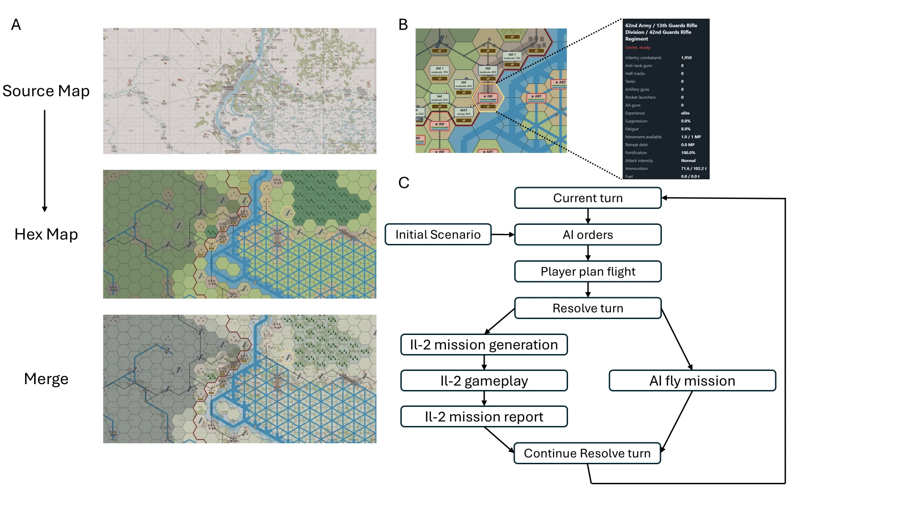
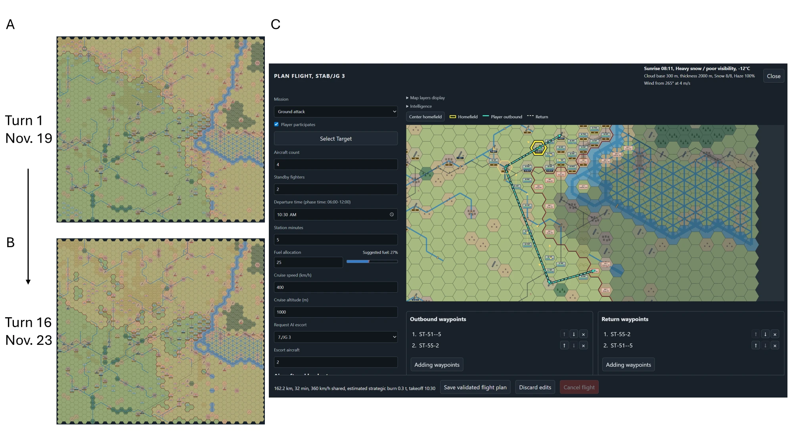
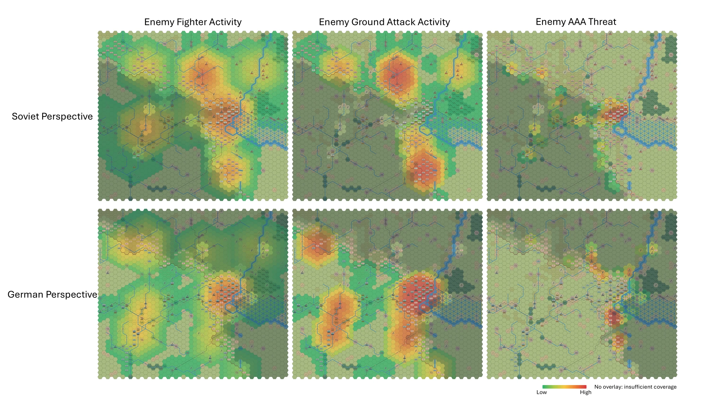
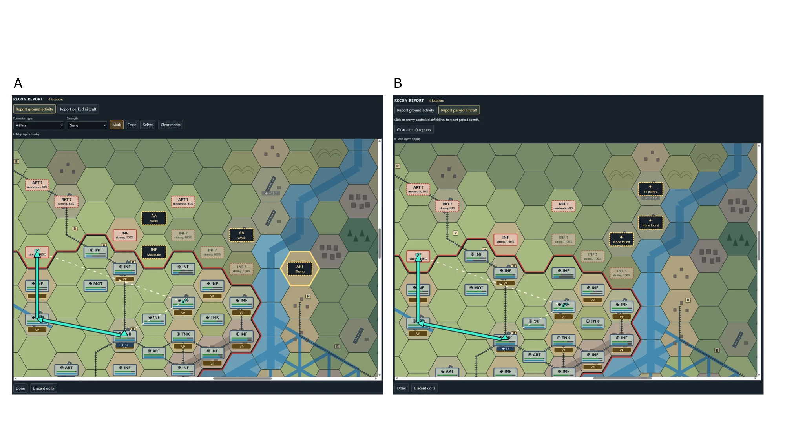
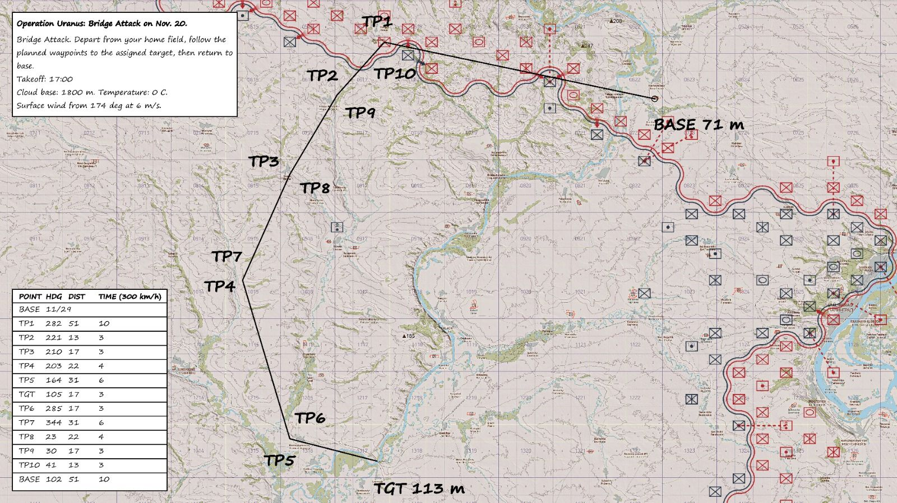

IL-2 Dynamic Campaign
IL-2 Dynamic Campaign (I2DC) is a third-party dynamic campaign application for IL-2 Great Battles. It independently and explicitly simulates an ongoing war, both in the air and on the ground. It generates flyable missions from that war and carries your actions back into the campaign. The beta includes a full-map Operation Uranus campaign for either side.
War game simulation
I2DC explicitly simulates the entire conflict like a war game. It is built around a hex-based operational map linked to IL-2 coordinates, with ground formations represented at approximately brigade to regimental scale, and air units organized at the regiment / staffel level. Ground formations fight, aircraft carry out operations, supplies move between depots, airfields and the front, and AI commanders issue orders based on available reconnaissance and intelligence information. The front develops through these operations and their outcomes, while losses and disrupted supply shape what can happen next.

What you will do as a player

You manage your unit and plan your flights within the war. When the campaign reaches your sortie, it pauses and generates an IL-2 mission. As you fly the mission, you will see other AI flights carrying out their missions, ground units maneuvering and fighting, and supply trucks trying to get to their destination, matching the strategic situation. After flying, you import the results, and the outcome of your sortie shapes how the war continues. Suppression, reconnaissance, fuel and ammunition storage are all simulated to allow players to influence the battle in a variety of ways.
Intelligence, Reconnaissance, and Flight Planning
Fog of war constrains what you, and the AI commander, know about the battlefield. All enemy information results from reconnaissance reports submitted by player flights, AI flights, and ground observers. This information is aggregated into an intelligence report, available for the AI commander and player, to direct future reconnaissance effort, fighter patrol priority, and ground attack routing. A deep strike will require intelligent planning to avoid known defensive positions or enemy activity hotspots to increase the chance of completing your objective. The enemy also responds to player activities. If players keep operating ground strike or interception in the same area, the enemy's perceived local threat level will increase, and they might respond by avoiding this area, requesting additional escort, or directing additional interception or fighter sweep in the area.


